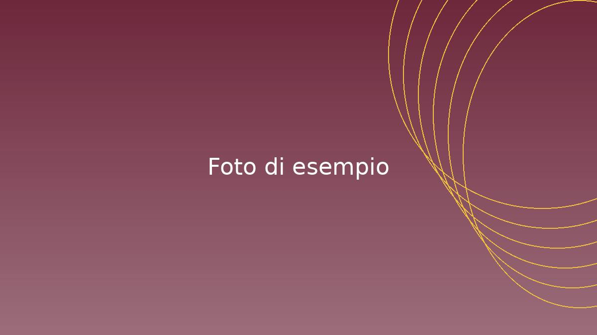

Il concerto di Natale quest'anno raddoppia
Due serate, sabato 12 e domenica 13 dicembre, con un programma che unisce brani della tradizione e colonne sonore.

- Quando
- Sabato 12 e domenica 13 dicembre 2026, alle 21
- Dove
- Da indicare
Visto il successo dello scorso anno, l'associazione ha scelto di proporre il concerto in due date, per permettere a più persone di partecipare.
Sul palco suoneranno insieme i musicisti più esperti e gli allievi dei corsi.